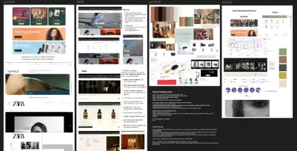
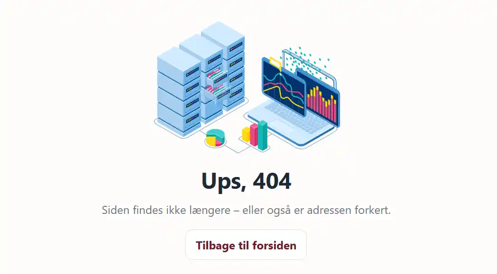
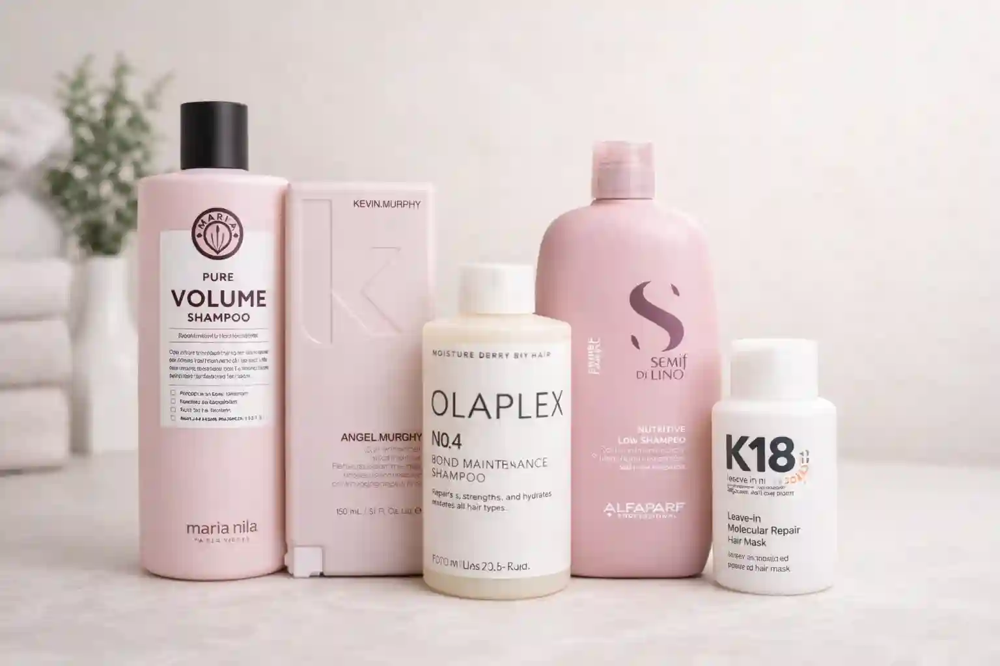
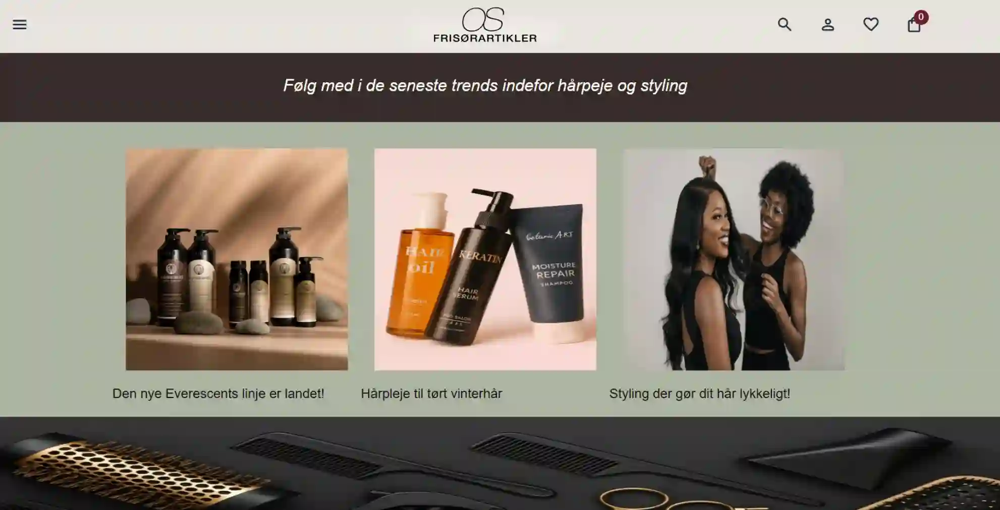
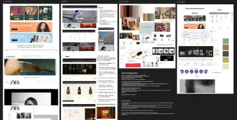
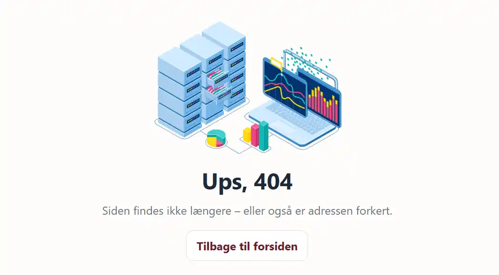
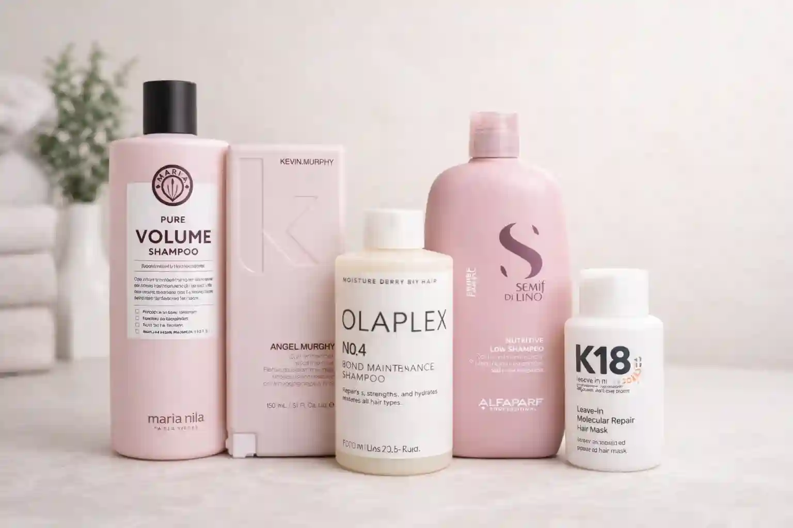
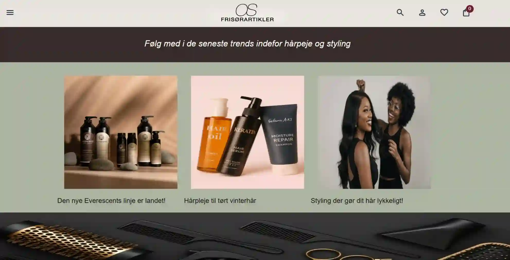

Tema 5
Grundlæggende Indhold
INTRO TIL TEMAET
I tema 5 arbejdet med at skabe vores indhold. Vi brugte flere
forskellige værktøjer til redigering af både billeder, tekst samt
animationer. Hertil anvendte vi Photoshop til at redigere og forbedre
vores billeder taget i salonen, mens Firefly blev brugt til generering
af nye visuelle stil-billeder og produkter til vores site.
I temaet arbejde vi også med Adobe After Effects for at skabe
Lottie-filer, som efterfølgende kunne tilføjes på en evt. 404 side. Vi
arbejdede i grupper og lavede interviews og research med vores valgte
virksomhed og med alt dette, fik vi skabt et helt nyt websted.
 







Gruppearbejde
I gruppearbejdet brugte vi metoderne Trello og Scrum til at skabe
daglig struktur, overblik og klare arbejdsfordelinger. Ved hjælp af
planlægning og løbende koordinering, fik vi løst vores opgaver
effektivt og til tiden.
Vores projekt blev opstillet i en fælles Figma, hvor vi
visualiserede vores mål, roller og deadlines, så hele gruppen havde
et fælles udgangspunkt og en tydelig retning.
Vi indsatte eksempelvis forskellige desk-research som værktøj til at
finde de bedste idéer til widgets, farver, layouts osv.
Git og VS-code
Derudover brugte vi Git til versionsstyring, hvor vi løbende committede vores ændringer direkte fra VS Code. Vi kommunikerede ved siden af, før en merge, og skabte dermed ro og overskud i vores kodning. Det gjorde vores samarbejde mere overskueligt, da vi så kunne arbejde parallelt, altid holde styr på, hvem der havde lavet hvad.
Programmer brugt
I arbejdet med at skabe vores indhold brugte vi flere forskellige værktøjer til både billeder, tekst og animationer. Vi lavede interviews med ejeren af OS Frisørartikler og holdt os løbende opdateret med nye ønsker eller spørgsmål, der kunne komme herfra,Hertil anvendte vi Photoshop til at redigere og forbedre vores billeder taget i salonen, mens Firefly blev brugt til generering af nye visuelle stil-billeder og produkter til vores site. I temaet arbejde vi også med Adobe After Effects for at skabe en Lottie-fil, som efterfølgende kunne tilføjes på en evt. 404 side. Dog nåede vi ikke at få en lottie på plads i vores gruppe, og opsatte derfor en 404-side med allerede eksisterende lottie fra Lottiefiles.com